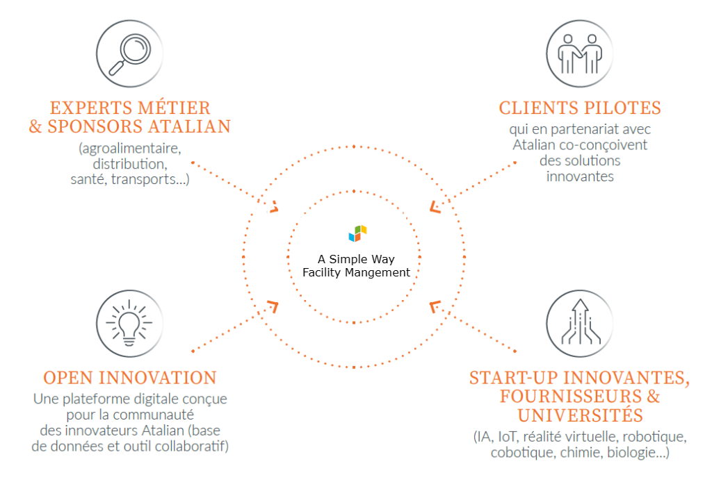

Une stratégie d'innovation au service de nos clients
L’offre ASW bénéficie d’une démarche d’innovation très pragmatique.
Le Groupe s’intéresse à des innovations existantes ou en cours de développement,
en vue de déploiements rapides. Chaque innovation étudiée doit avoir une
application concrète et pouvoir s’intégrer dans une offre commercialisable.
Les innovations susceptibles de répondre à un besoin identifié sont testées
en partenariat avec des clients pilotes (proof of concept). En fonction des
résultats observés, elles peuvent être ensuite déployées
l'écosystème innovation ASW

retour sur nos succés
robotisation
Robot laveur
RETAIL
Intégration dans l’organisation de nos équipes opérationnelles :
autonomie, qualité de nettoyage, traçabilité sur cartographie.
Formation
Foramtion en réalité virtuelle
INDUSTRIE
Meilleure appréhension du contexte client et des méthodes à déployer.
Audit de nettoyabilité
Détection des risques
Agroalimentaire
Détermination des zones critiques d’accumulation
désinfection
Revêtements Actifs
transport
Maintien d’une surface hygiénique pendant 30J
Perspective 2023
Piège connecté
Se déplacer au bon endroit au bon moment,
identifier les zones d’infestation
Formation en réalité mixte
Se former dans la réalité du client, mieux
appréhender les gestes à faire, les risques en suivant un parcours interactif
SAV à distance
Dépanner en moins d’une heure avec l’aide d’un expert et se former aux équipements
complexes de façon autonome.